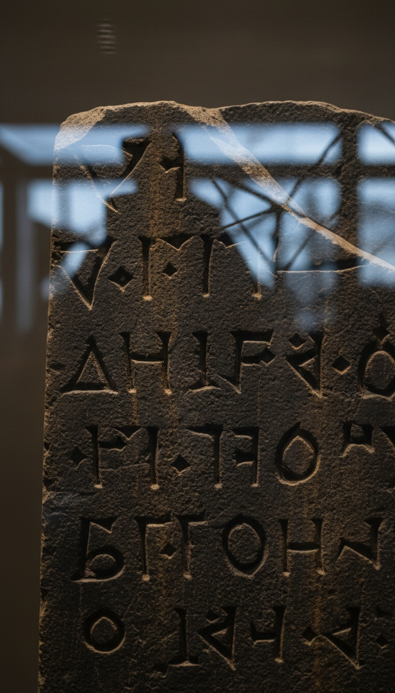

Historians spent a hundred years building a case that King David was invented. In July 1993, a broken slab of volcanic rock pulled from a trash wall in northern Israel ended that argument. His dynasty was carved in stone. By his enemy. In the enemy's own words.
The stone is at the Israel Museum in Jerusalem right now. Archaeology Wing, ground floor. Anyone can stand in front of it. The letters are still razor-sharp. They have been razor-sharp for nearly three thousand years.

A Century of Academic Erasure
The Copenhagen School is the name of the academic movement that spent decades arguing David and Solomon were invented characters, theological propaganda written centuries after any supposed events. Thomas L. Thompson published The Historicity of the Patriarchal Narratives in 1974, arguing the biblical patriarchs had no historical grounding. Niels Peter Lemche developed the framework through the 1980s. Philip R. Davies published In Search of Ancient Israel in 1992, calling the ancient Israel of the Bible a literary construct with no archaeological footprint.
Their argument rested on a single pillar: the entire historical record outside the Bible was silent on David. Every reference to his reign came from texts written centuries after his supposed rule, in a religious context that gave scribes every incentive to glorify a founding king. The minimalists held chairs at Copenhagen, Sheffield, and Gottingen. Their position was the dominant framework in academic biblical studies through the 1980s and into the early 1990s.
Then a field crew clearing a secondary-use wall at Tel Dan in northern Israel found a piece of black stone sitting face-down in the rubble.
The Black Basalt Fragment
Tel Dan sits at the headwaters of the Jordan River in the far north of Israel. The site has been occupied continuously from the Chalcolithic period through the Hellenistic era, with Bronze Age, Iron Age, and later layers stacked on top of each other. Israeli archaeologist Abraham Biran had been excavating there since 1966, working steadily through each stratum. In July 1993, a team member named Gila Cook was working a secondary-use wall, a wall built from salvaged stones of earlier structures, when she spotted a piece of black basalt that did not belong to the local geology.
The fragment measured 32 centimeters by 22 centimeters. Volcanic stone, not native to the Tel Dan region. Someone had transported it deliberately. The surface was dressed smooth with professional precision. Letters were chiseled into the face with a tool that left clean, sharp edges still visible thirty centuries later. Ancient Aramaic script, ninth century BC by paleographic analysis, dated by comparing individual letter shapes against inscriptions with established historical contexts.
Biran and co-author Joseph Naveh published their initial reading in the Israel Exploration Journal in 1993. The following two excavation seasons produced two additional joining fragments, labeled B1 and B2, which clarified several damaged portions of the text. The assembled stele, still incomplete, ran to at least thirteen lines.
What the Enemy Carved
The Tel Dan stele is a victory monument. The king who commissioned it was recording his military triumphs for his own population, listing the enemies he had killed and the kingdoms he had broken. His motivation had nothing to do with scripture or religious preservation. He was a foreign ruler making a political statement in his own language for his own audience, people who shared none of Israel's theology and had every reason to be hostile to its claims.
Lines 8 and 9 of the reconstructed text name his targets: the king of Israel, and the king of "the House of David." In Aramaic: bytdwd. Beit David. The House of David. Five letters. That phrase constitutes the first confirmed extrabiblical reference to David's dynasty ever recovered. Named not by a believer, not by an Israelite scribe with a theological agenda, but by a hostile foreign king who named the Davidic dynasty because his own audience already recognized what that name meant.
Most epigraphers attribute the inscription to Hazael, king of Aram-Damascus, who campaigned through Israel and Judah approximately 841 to 835 BC. That is roughly 150 years after David would have founded his dynasty. A dynasty named for its founder 150 years after his death is exactly how royal houses operated across the ancient Near East. The Davidic name as a dynastic marker was not a scriptural invention. It was a recognized political identity that an enemy king thought worth recording as a defeated opponent.
The man who destroyed the most durable evidence of David's dynasty was trying to erase it permanently. He buried it face-down in a wall. It stayed there for 2,800 years.
Face Down in a Wall
The Tel Dan stele was pulled from construction fill, its pieces turned face-down in rubble, the inscription pressed against the earth. That positioning required deliberate effort: smashing the volcanic stone, orienting every fragment text-side down, and incorporating the broken pieces into a later wall structure. Someone with specific knowledge of what the inscription said made a targeted decision to destroy it.
The stele came down after the Assyrian conquest of the northern territories in the late 8th century BC, when Tiglath-Pileser III dismantled the regional power structures. Hazael's victory monument, celebrating Aramean military dominance, became unwanted information under the new order. The name the stone carried was information worth burying rather than leaving standing in a public space. Breaking basalt requires tools and sustained effort. Turning each piece face-down before building it into fill material required additional deliberate action. This was a targeted operation against a specific text.
And for 2,800 years, the operation succeeded.
What the Minimalists Did After
After the 1993 publication, Frederick Cryer and several Copenhagen School figures argued the reading was wrong. Their alternative: bytdwd was a geographic place name or a divine epithet meaning "house of the beloved," not a dynastic title referencing David specifically. The debate ran through the Israel Exploration Journal and the Biblical Archaeology Review through the mid-1990s.
Anson Rainey, one of the 20th century's leading Semitic linguists, dismantled the alternative readings on philological grounds in 1994. The grammatical construction does not support a place-name reading. The syntax matches dynastic nomenclature. André Lemaire, working independently on the Mesha Stele, a Moabite victory monument found in 1868 and now held at the Louvre in Paris, identified a second House of David reference in a damaged section of that older inscription. Two enemy states. Two separate monuments. Both naming the same dynasty.
The current specialist consensus holds the Tel Dan reading as settled. The argument that David was a literary invention ended at Tel Dan. The question shifted to the scale of his kingdom, which is a different argument with different evidence. Whether he existed at all is no longer the argument.
Two Museums, Two Enemy Stones
The Tel Dan fragments are at the Israel Museum in Jerusalem, Archaeology Wing, under controlled lighting. The dark basalt makes the chiseled letters stand out with particular clarity. The stone is visibly volcanic, different in texture and color from the limestone that dominates the Tel Dan site. Someone transported that material a significant distance, chose it specifically for its hardness, carved a monument intended to last, and still watched it get smashed apart and buried in construction fill.
The Mesha Stele is at the Louvre in Paris, Department of Oriental Antiquities. Found in 1868 by Frederick Augustus Klein, an Alsatian missionary, at the site of ancient Dibon in what is now Jordan. Commissioned by Mesha, king of Moab, to celebrate his victories against Israel in the 9th century BC. The House of David reference sits in a damaged line that Lemaire spent decades reconstructing from a latex squeeze of the original surface, taken before local residents broke the stone apart searching for valuables hidden inside.
Both monuments carved by enemies of Israel. Both naming David's dynasty on their own victory stones. The monuments meant to destroy the name are the same monuments that preserved it for three millennia.
The skeptics reach for the same objection: a dynastic name on stone does not confirm every detail in the biblical account. A victory stele confirms a dynasty existed. It does not confirm the Goliath story, the Jerusalem capital, the musical genius. Those are different arguments with different evidence, and Tel Dan was never asked to answer them. Tel Dan was asked whether a dynasty called the House of David existed as a recognized political power in the ancient Near East, real enough for foreign kings to name when recording their own victories. It answered that. The Mesha Stele answered that. The deliberate destruction of the stele answered it a third time, louder, because you do not haul basalt to a construction site and bury an inscription face-down in a wall unless the name it carries still holds power.
Twenty-eight centuries in the ground. One dig crew. One black fragment. And suddenly the myth had a dynasty with enemies powerful enough to carve it in stone and frightened enough to try to bury it.
The harder question is what else is still face-down in a wall somewhere. Tel Dan survived because a construction crew used the broken pieces as rubble fill, which kept the inscribed surface protected against the elements. How many other stones carried other names, and were buried more thoroughly, in sites that have not been excavated, or will never be excavated, or were excavated a century ago by someone who mistook broken basalt for ordinary debris and discarded it? The record we have is the record that accidentally survived. What the full record looks like is a different question entirely.
Before you go
7 books the Vatican doesn't want you reading. Free PDF — the texts they cut, with sources. Joined by 140+ Inner Circle members.
No spam. Unsubscribe anytime.
Go deeper
The Hidden Canon, Vol. I — Enoch. Jubilees. Thomas. Mary. Judas. 90 pages, 14 chapters, every receipt cited. The books your Bible quietly removed.
Read the Canon →Books that informed this investigation
As an Amazon Associate, Hidden Epoch earns from qualifying purchases. Cost to you: nothing.
Research safely
The VPN we use to research without being tracked. First 3 months free.
Get NordVPN →